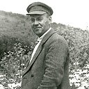
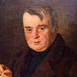

Иван Ползунов
Иван Иванович Ползунов, создатель первой в России паровой машины и первого в мире двухцилиндрового парового двигателя, родился в 1728 году в Екатеринбурге в семье отставного солдата.
Иван Ползунов учился в арифметической школе, после окончания которой в 1742 году был определен учеником к механику на одном из заводов Урала. Уже в двадцать лет Ползунов был специалистом в горнозаводском деле, и его перевели на колывано-воскресенские заводы Алтайского края.
Здесь он получил должность гиттеншрейбера — смотрителя и учетчика при плавильных печах.
Свою деятельность в качестве конструктора-изобретателя Ползунов начинает с 1754 года, когда он конструирует и собирает вододействующую установку для нужд завода. Вскоре после этого он стал одним из руководителей завода.
Все последующие оригинальные проекты И. И. Ползунова, направленные на облегчение труда заводского коллектива, не были претворены в жизнь и годами пылились в архивах.
В 1763 году природная склонность Ползунова к изобретательству и рационализации позволила ему разработать проект парового двигателя мощностью 1.8 л.с. Это был первый в истории двухцилиндровый двигатель с работой цилиндров на один общий вал.
Проект послали Екатерине II, и она наградила изобретателя деньгами и повысила в чине на две ступени. В 1764-1766 годах Иван Иванович Ползунов сконструировал новый паровой двигатель мощностью 32 л.с, что позволило отказаться от водных колес в заводском производстве.
Огромная концентрация и тяжкий труд от проделанной работы оказали губительное влияние на здоровье Ползунова: в 1766 году он умер от чахотки за неделю до пробного пуска машины. После запуска машина проработала около трех месяцев, и за это время принесла огромную прибыль. После поломки двигатель не стали ремонтировать и разобрали на части.
Имя Ползунова было забыто до тех пор, пока в 1974 году шотландец Джеймс Уатт не сконструировал новый вариант двигателя. Машина Уатта получила широкое распространение, но все же первую паровую машину создал ученый-самоучка на Алтае.
Имя изобретателя носит Алтайский государственный технический университет, рядом с ним установлен памятник Ползунову.
Акинфий Демидов
Акинфий Никитич Демидов родился в 1678 году в семье тульского оружейника Никиты Демидовича Антюфеева (с 1702 года – Демидова). С юных лет он обучался кузнечному, оружейному и железоделательному ремеслу. В молодости посещал Саксонию, где познакомился с европейским опытом организации и управления системой горнозаводского производства.
Участвовал в строительстве и управлении уральскими заводами ещё при жизни отца. Он унаследовал от отца деловую хватку, был глубоким знатоком горнозаводского хозяйства, предприимчивым деятелем, умевшим ловко маневрировать среди придворных вельмож и добиваться для себя исключительных привилегий, в том числе чина действительного статского советника.
Акинфий Демидов продолжал развивать инфраструктуру между своими заводами, расчищать речные пути, прокладывать дороги, строил новые заводы, в три раза расширив свои владения. Основывая новые заводы, он преследовал не только личные, но и государственные и общенародные интересы. Так, первая в России косная фабрика на Среднем Урале была построена им «для славы Российской империи и всенародной пользы».
Помимо традиционных железа, чугуна и меди, он начал добычу и обработку малахита и магнита, а также асбеста, или горного льна.
Хотя он построил семнадцать железных и медеплавильных предприятий, главным делом для него был Нижнетагильский завод, оборудование которого соответствовало лучшим русским и западноевропейским образцам. Это предприятие существует и сегодня. В 1725 году здесь была пущена первая домна, в то время крупнейшая в мире.
В целях повышения доходности предприятия и борьбы с мелкими промысловиками, Демидов предпринял небезуспешные действия по монополизации добычи руды.
С открытием на Алтае полиметаллических руд Акинфий Демидов получил разрешение и монопольное право на строительство здесь рудников и заводов. Он основал несколько поселений по глухим местам вплоть до Колывани, и в 1729 году Колывано-Воскресенский завод на реке Локтевке выдал первый металл. В 1740—1744 годах был построен Барнаульский сереброплавильный завод, хорошо оборудованный для того времени.
Михаил Лисавенко

Лисавенко Михаил Афанасьевич - Известный ученый-садовод, доктор сельско-хозяйственных наук, профессор, академик ВАСХНИЛ, Герой Социалистического Труда, дважды лауреат Государственной премии (1946, 1981 -- посмертно). Селекционер, основатель и бессменный руководитель Алтайской опытной станции садоводства (с 1973 НИИ садоводства Сибири его имени), один из организаторов промышленного садоводства в Сибири. Родился в селе Боготол (ныне Красноярский край) в семье лесообъездчика.
После окончания гимназии в Красноярске (1917) 3 года учился на юридический факультет Томского университета, одновременно был вольнослушателем историческо-филологического факультета.
Известный ученый-садовод, доктор сельско-хозяйственных наук, профессор, академик ВАСХНИЛ, Герой Социалистического Труда, дважды лауреат Государственной премии (1946, 1981 -- посмертно). Селекционер, основатель и бессменный руководитель Алтайской опытной станции садоводства (с 1973 НИИ садоводства Сибири его имени), один из организаторов промышленного садоводства в Сибири.
Родился в селе Боготол (ныне Красноярский край) в семье лесообъездчика. После окончания гимназии в Красноярске (1917) 3 года учился на юридический факультет Томского университета, одновременно был вольнослушателем историческо-филологического факультета.
Лисавенко, горячо пропагандировавшему идеи сибирского садоводства, предложили возглавить опорный пункт Мичуринского НИИ в Ойрот-Туре (Горно-Алтайске). Заложенный в окрестностях этого города опорный пункт в 1943 преобразован в плодово-ягодную опытную станцию, в 1950 она перебазирована в Барнаул, получив названа Алтайской опытной станции садоводства. К 1967 станция - краевое научно-исследовательское учреждение с несколькими опорными пунктами и 4 питомниками, площадь ее насаждений превысила 600 га, в год выращивалось 2,6 млн саженцев.
В 1952 Лисавенко первому в стране присуждена Золотая медаль им. И. В. Мичурина. Автор более 300 опубликованных научных работ, в т.ч. "Садоводство", "Сибирский сад", "Плодоводство Сибири", "Вопросы сибирского садоводства". В Барнауле выпущены книги Лисавенко "По мичуринскому пути" (1950), "Учение Мичурина в действии" (1958).
Фридрих Геблер

Геблер Фридрих Вильгельмович - врач, естествоиспытатель, географ, член-корреспондент РАН (1833).
Фридрих Август Геблер родился 15 декабря 1782 года в городке Цейленрод в Саксонии. Предки его принадлежали к знатному старинному роду и занимали высокие должности при прусском и австрийском дворах.
Образование первоначальное он получил дома под руководством учителей-наставников, затем в лицее и 16-летним юношей поступил в университет города Иены, где изучал медицину и естественные науки. В 1802 году Фридрих по окончании университета сдал кандидатский экзамен и получил степень доктора медицины и хирургии.
Практиковал в Грейце и Дрездене, а в 1808 поступил на русскую службу.
Узнав из газет о том, что русское правительство приглашает для работы в России иностранных специалистов, Фридрих Геблер решил покинуть родную Саксонию. В 1809 году он приезжает в Петербург, а в 1810 году - на Алтай, в Барнаул, ставший вскоре ему второй родиной.
C февраля 1810 Геблер - врач Барнаулького центрального госпиталя, в июле 1820 утвержден зав. медецинской и фармацевтической частью горнного округа.
После принятия нового "Уложения об управлении Колывано-Воскресенских горных заводов" (1828) и до выхода на пенсию (1849) -- инспектор медицинской части Колывано-Воскресенских заводов.
Систематически выезжал в госпитали и лазареты округа, оказывал им практическую помощь, содействовал архимандриту Макарию Глухареву в налаживании работы миссионерской больницы в с. Майма (1837). Заботился о повышении оплаты труда подлекарей, о продвижении лекарских учеников по службе.
По его инициативе в Барнауле были созданы "частные горницы" - прообраз нынешних стационаров на дому. Геблер - основоположник судебной медицины в Сибири. Интересовался причинами высокой заболеваемости и травматизма среди работных людей рудников и заводов, выдвигал положение об их социальной обусловленности.
Опубликовал серьезный труд "Описание Салаирского края в медицинском отношении". Большое внимание уделял работе аптек и снабжению госпиталей и лазаретов лекарствами.